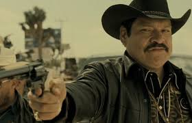

FAMOSOS JUARENSES
Juan Gabriel, cuyo nombre real era Alberto Aguilera Valadez, nació el 7 de enero de 1950 en Parácuaro, Michoacán, México, y falleció el 28 de agosto de 2016 en Santa Mónica, California, Estados Unidos. Fue uno de los artistas más queridos y exitosos de la música latina, conocido por su talento excepcional como cantante, compositor y productor. A lo largo de su carrera, escribió más de 1,800 canciones, muchas de las cuales se convirtieron en éxitos, como "Querida", "Amor Eterno" y "La Farsa".
Manuel "El Loco" Valdés nació el 29 de enero de 1931 en Ciudad de México y falleció el 28 de agosto de 2020. Fue un reconocido actor y comediante mexicano, muy querido por su estilo único y su gran capacidad para hacer reír. A lo largo de su carrera, Valdés participó en numerosas películas, telenovelas y programas de televisión, convirtiéndose en una de las figuras más importantes del entretenimiento en México.

Joaquín Cosío nació el 6 de octubre de 1962 en Tepic, Nayarit, México. Es un actor mexicano reconocido principalmente por su versatilidad en el cine y la televisión, y por su imponente presencia en pantalla. A lo largo de su carrera, Cosío ha interpretado diversos papeles en películas de comedia, drama y acción, pero es especialmente conocido por su interpretación de "El Cochiloco" en la famosa película "El Infierno" (2010), dirigida por Luis Estrada.

Luis Montes Jiménez nació el 21 de mayo de 1986 en Guanajuato, México. Es un futbolista profesional conocido por su habilidad en el mediocampo y su visión de juego. Montes comenzó su carrera en el fútbol profesional en las divisiones inferiores de Club León, donde debutó en el primer equipo en 2006. Desde entonces, ha sido un pilar en el equipo, destacándose por su capacidad para distribuir el balón, su precisión en los pases y su capacidad para marcar goles desde fuera del área.
A lo largo de su carrera, "El Chapo" Montes ha sido una pieza clave para León, ayudando al equipo a conseguir varios títulos de liga en la Liga MX, incluyendo campeonatos importantes como el Clausura 2014 y el Clausura 2020. Además, ha sido convocado varias veces para la Selección Nacional de México, participando en competiciones internacionales como la Copa América y la Copa del Mundo.